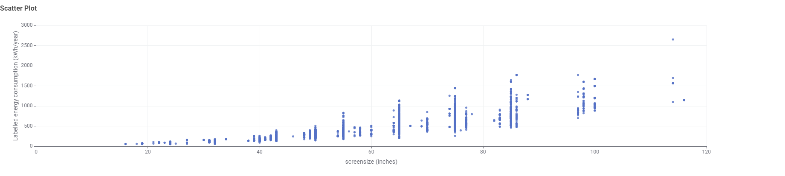
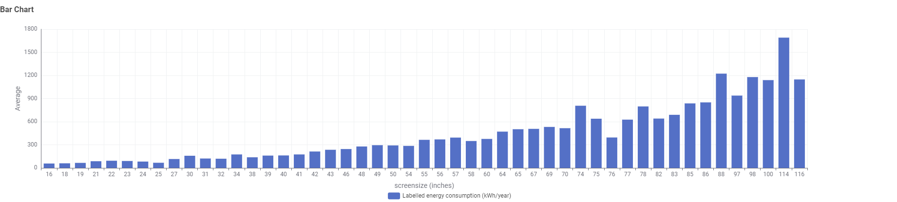
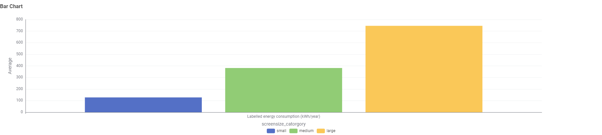
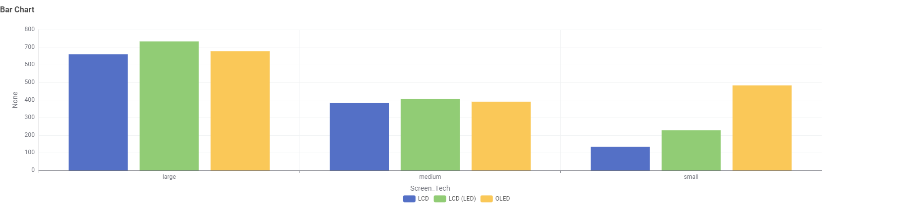

When choosing a television, consumers often focus on screen size and display technology.
These two stories use the TV energy dataset to show how those choices relate to annual
labelled energy consumption.
Story 1
Bigger Screen, Bigger Energy Use?
How does screen size impact energy consumption?
Issue
Consumers may choose a larger TV for a better viewing experience without realising
that screen size can be associated with higher annual energy consumption.
Demonstrate the issue
The scatter plot shows a clear upward pattern: as screen size increases, labelled
energy consumption generally increases as well.

Screen size vs labelled energy consumption. Larger screens are generally positioned
higher on the energy-consumption axis.
Make the comparison easier
Looking at every individual screen size creates a detailed but busy view. Grouping TVs
into small, medium and large categories makes the main pattern easier for a consumer to see.
View detailed energy use by individual screen size

Detailed view of average energy consumption for individual screen sizes.
What the simplified view shows

Average annual energy use rises strongly from small to medium to large TV categories.
Key takeaway:Larger TVs consume substantially more energy on average than smaller TVs.
Recommendation
Consumers who want to reduce electricity use should consider whether they need a larger
screen and compare the annual energy consumption shown on the TV's energy label before buying.
Story 2
Does Screen Technology Affect Energy Use?
How does screen type affect energy consumption?
Issue
TV buyers can choose between LCD, LCD (LED) and OLED screens, but comparing technology
alone can be misleading because TVs of different technologies are not always the same size.
Demonstrate the issue
To make a fairer comparison, screen technologies are compared within the same small,
medium and large size categories rather than using one overall average for each technology.
Comparison approach
The grouped chart compares LCD, LCD (LED) and OLED within each TV-size category. This
helps show whether technology still makes a difference when screen size is considered.
What the data shows

Energy consumption differs by screen technology, but the pattern is not consistent
across every TV-size category.
Key takeaway:Screen technology matters, but it should be considered together with screen size.
Recommendation
Consumers should not choose a TV based on screen technology alone. Compare screen size,
display technology and the actual annual energy consumption on the energy label before
making a purchase decision.